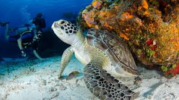
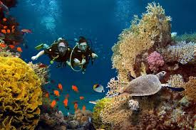
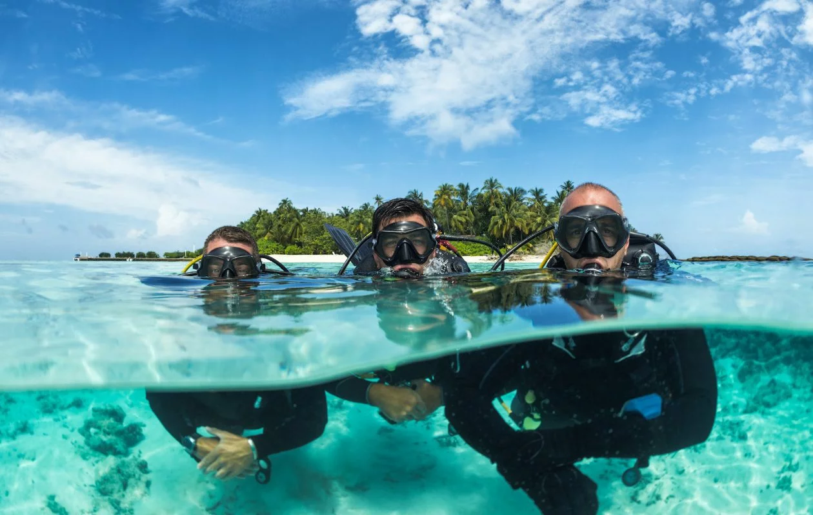
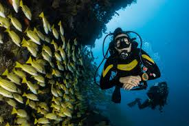
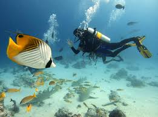
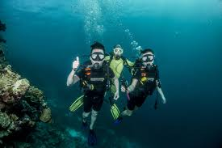
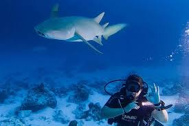

Scuba Diving
Explore the underwater world full of adventure.
Bali, Indonesia
Late in the 19th century, the focus began to shift from collecting and cataloging to the systematic analysis of marine ecosystems and the ecological roles and behaviour of marine life. By the early 20th century, oceanographers had begun to intensively study fishing grounds and other localities of economic importance. This research combined studies of marine flora and fauna, ocean currents, water temperature, salinity, and oxygen levels, and other factors in an effort to understand the relationship between marine animals and their environment.
Click Here to dive
Sharm El Sheikh, Egypt
Sharm El Sheikh is home to some fantastic local diving as well as some impressive shipwrecks, walls and reefs offering around 30 different sites to explore on day trips alone. The boats are large, comfortable and designed specifically for diving. Ras Mohammed National Park offers a number of exciting sites for those on day diving trips. One of Ras Mohammed's most popular dive sites is Shark and Yolanda Reef, where divers can encounter schools of hammerhead sharks, whitetip reef sharks, and barracuda. This site is also home to the remains of the Yolanda, a cargo ship that sank in 1980 and left behind a treasure trove of cargo, including toilets, bathtubs, and even BMWs!
Click Here to dive
Koh Tao, Thailand

Koh Tao Divers is known for highly trained dive professionals and chilled-out vibe with unshakeable dedication to scuba diving. KTD is an award winning dive center offering officially the widest selection of dive courses on Koh Tao. Whether you want to start diving, learn the secrets of technical or CCR diving or want to become a dive professional, we make sure to polish your skills to the next level. KTD is Finnish owned, but our international and multilingual team offers diving courses in multiple languages and we use the most advanced online learning system on the market.
Click Here to dive
Oman, Middle East
In 2018, after scuba diving on Havelock Island (India) for the first time in my life, I felt a deep connection with the ocean. It had casted its spell, and to date, it is holding me in its net of wonder. Life under the water is magical, and I have decided to explore it as much as possible. While preparing for my vacation in the Middle East, it was obvious for me to include Oman because of Daymaniyat Islands, which are popular for their rich marine life. Scuba diving there was the highlight of my trip
Click Here to dive
Kenya, Africa
Hawksbill and Green sea turtles are regularly seen while diving and we are very fortunate to have such a healthy population that are living right with us on our doorstep. Not only do we see these great creatures on our dives, but they are also using Diani Beach as a nesting ground, returning to the same stretch of beach where they too would have been born many moons ago.
Click Here to dive
Bahamas, Caribbean
In 2011, their government banned all commercial shark fishing, allowing sharks in the Bahamas to roam freely. Apart from shark diving, the diverse range of diving in the Bahamas includes blue holes and caves, historical wrecks and lush reefs, and dynamic walls. The Bahamas also offers unmatched visibility and a wide range of diving opportunities for divers of any level, which, all in all, make the Bahamas a strong contender for those seeking the best diving in the Caribbean.
Click Here to dive
Maldives, Indian Ocean
Scuba diving in the Maldives means diving at one of the worlds best scuba diving destinations, because of the white sand beaches, coral reefs, clear warm waters, best dive sites and rich marine life. The Maldives consists of many small islands that are grouped in 26 atolls in the Indian Ocean. All of the islands have white sand beaches and many have luxury resorts to comfort your stay at the island.
Click Here to dive
Tobago, Caribbean
Trinidad and Tobago offers many experiences for the discerning scuba diver. Just north of Venezuela and south of Grenada, this modest island is home to just over 50,000 people. But, its small size belies its reputation for big diving. With dive sites for every experience level, healthy reefs feature hard and soft coral and provide the chance to view some of the largest recorded brain coral in the world. Most dives are thrilling drifts fuelled by the nutrient-rich Guyana Current and offer the opportunity to swim with pelagics – a treat for even the most experienced diver.
Click Here to dive
Grand Cayman, Caribbean

scuba diving in the Cayman Islands is mostly known for close encounters with stingrays, it has much more to offer. Boasting strong diving infrastructure, diverse types of diving, incredible walls and wrecks, and great visibility. The Cayman Islands-- Grand Cayman, Little Cayman, and Cayman Brac--have been attracting scuba divers for decades, including beginners! The amazing diversity and dive sites for all levels are just one of the reasons why the Cayman Islands is also one of the top dive destinations in the Carribean.
Click Here to dive
Great Barrier Reef, Australia

Great Barrier Reef is concentrated around the town of Cairns, where day boats take divers and snorkelers out to the nearby reefs. This world-famous spot is popular with tourists and backpackers so it can get quite busy during peak season. For those willing to venture further north, Port Douglas offers some upmarket resort options as an alternative to the Cairns hostel scene.